Contre les violences sexuelles
Des causes
aux conséquences.
Nous agissons sur les deux fronts en prévenant les violences par la sensibilisation, et en accompagnant celles et ceux qui les subissent.
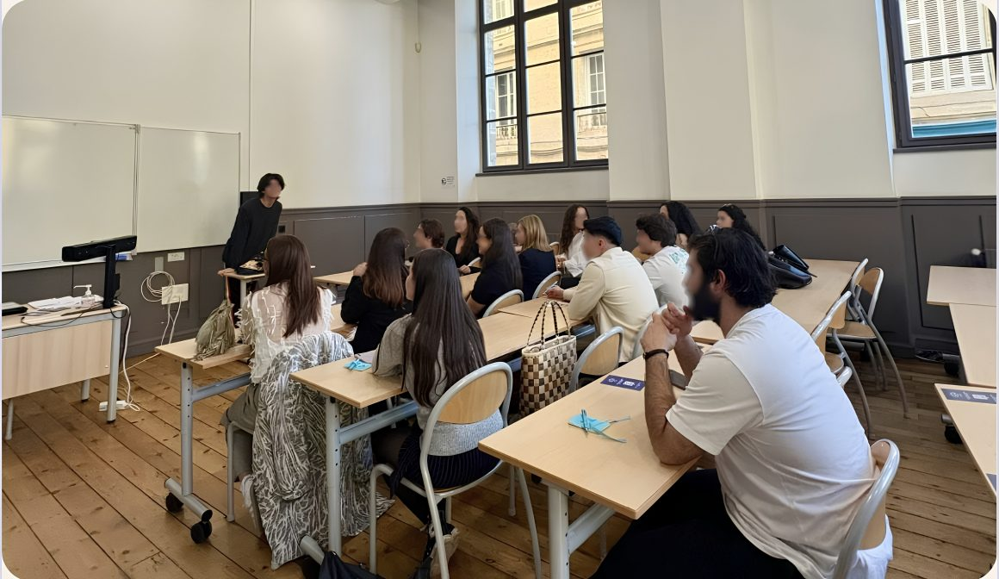
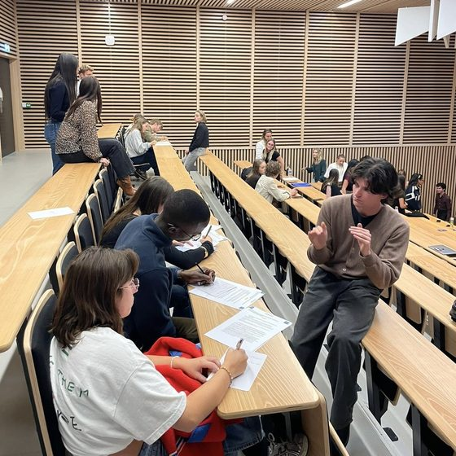
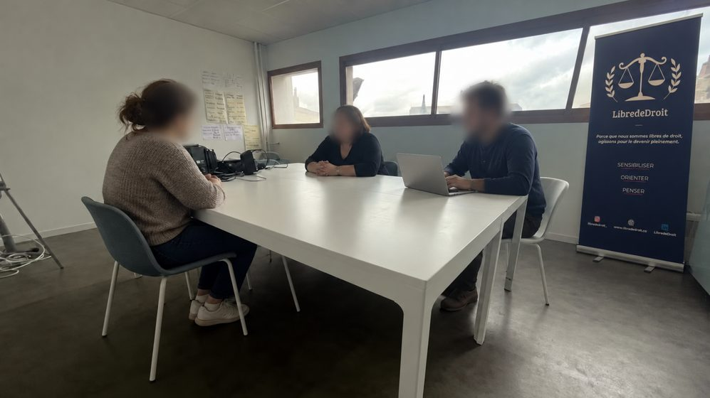
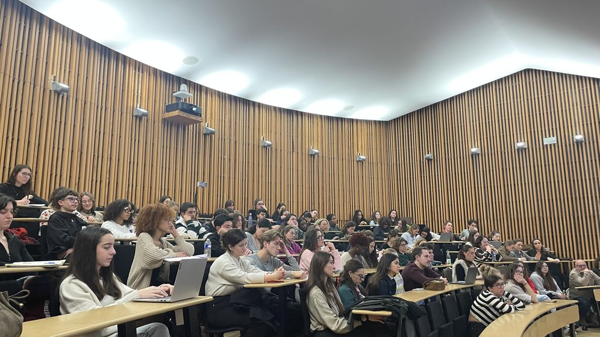
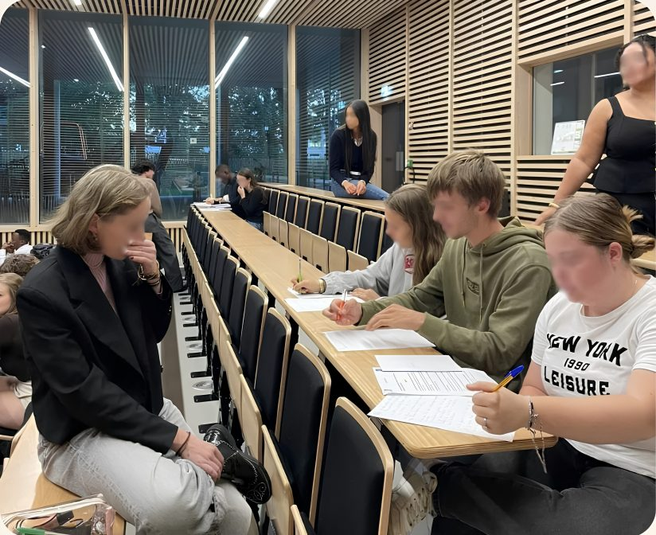
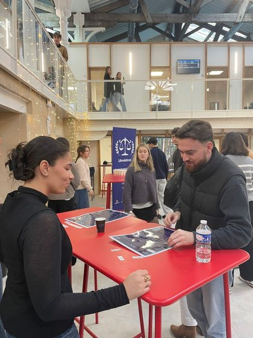
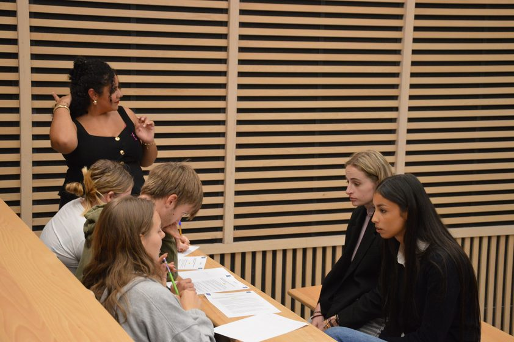
L'ampleur des violences sexuelles en 2025 en France.
0des victimes de viols sont des enfants.
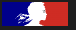
Source : Rapport du ministère de l'IntérieurCombattre les violences sexistes et sexuelles doit unir les femmes et les hommes.
-
Agir sur le terrain
Pour comprendre la complexité des violences, il faut y être confronté.
-
Toutes les victimes
Nous accompagnons chaque victime, sans jamais exclure qui que ce soit.
-
Indépendants, sans clivage
Associés à aucun mouvement politique ou idéologique.
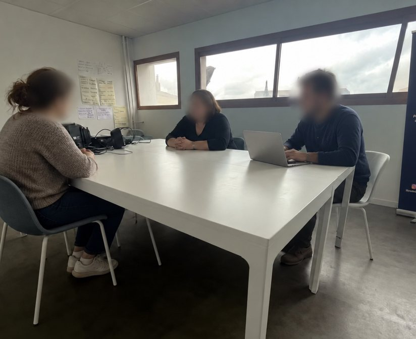
Accompagner les victimes
Nous accompagnons toute personne victime de violences sexuelles, conjugales, et/ou intrafamiliales, sans distinction. Des avocats et des psychologues spécialisés à vos côtés, pour sortir des violences et se reconstruire.
- Réponse
- Sous 24 heures
- Avocats partenaires
- Spécialisés
- Psychologues
- Issu·es du CAUVA
Sensibiliser
Sensibiliser, c'est donner à chacun·e les mots et les repères pour identifier ces violences, comprendre leurs mécanismes et savoir réagir. C'est le premier geste de prévention, et le plus puissant.
- Durée
- 1h30 à 4h
- Groupe
- 10 à 30 personnes
- Lieu
- Chez vous
Ils nous soutiennent
Ces associations et collectifs étudiants partenaires ont décidé de s'engager à nos côtés, en sensibilisant leurs membres et en relayant notre aide directe aux victimes.
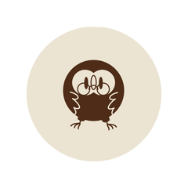
Le Hibou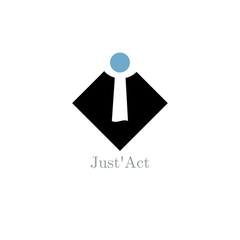
Just'Act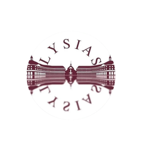
Lysias, Bordeaux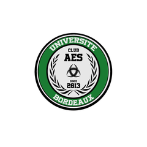
Le Club AES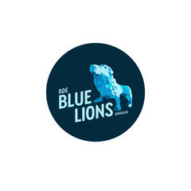
BDE Blue Lions Bordeaux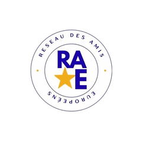
Réseau des Amis EuropéensMaster Droit Pénal Approfondi, BordeauxJournal « Le SCRUB »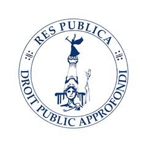
RES PUBLICA, Master Droit Public Approfondi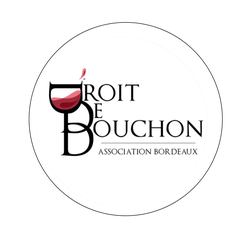
Master Droit de la Vigne et du Vin, BordeauxMaster Ingénierie Juridique et Financière des Sociétés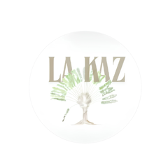
La Kaz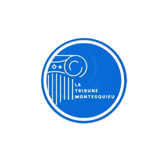
La Tribune MontesquieuNos coulisses en vidéo.
Entretiens, ateliers et actualités : retrouvez nos contenus sur les réseaux.
Soutenez notre action.
Chaque don finance nos ateliers de sensibilisation et l'accompagnement gratuit des victimes.
En danger immédiat ?
Composez le 17 (police) ou le 3919 (Violences Femmes Info, anonyme et gratuit, 24h/24).
- 17Police secoursDanger immédiat, 24h/24
- 15SAMUUrgence médicale
- 112Urgence européenneDepuis toute l'Europe
- 114Urgence par SMSSourds & malentendants
- 3919Violences Femmes InfoAnonyme & gratuit, 24h/24
- 0 800 05 95 95Viols Femmes InfoCollectif Féministe Contre le Viol
- 3018Violences numériquesCyberharcèlement, gratuit
- 116 006Aide aux victimesFrance Victimes, 7j/7
- 119Enfance en dangerAnonyme & gratuit, 24h/24
- 3114Prévention du suicideÉcoute 24h/24, gratuit